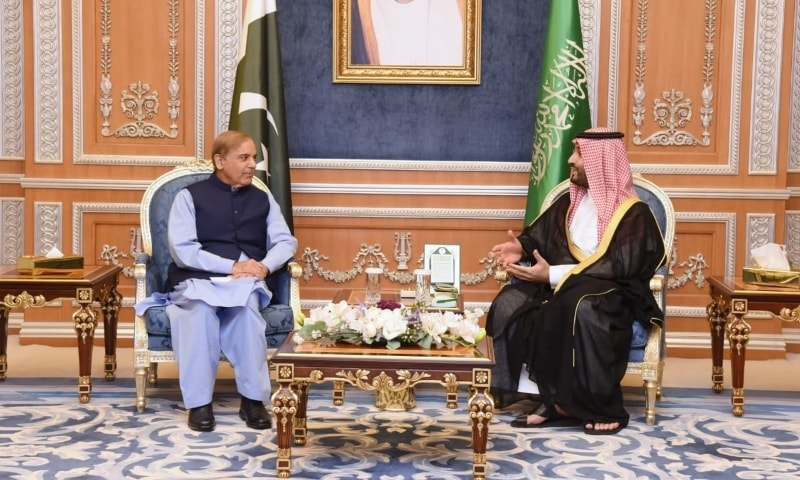

Saudi crown prince orders to not release of Pakistani pilgrims arrested for sloganeering at Masjid-i-Nabwi
Dawn.com | Published October 26, 2022

Prime Minister Muhammad Shehbaz Sharif is received by Crown Prince Mohammed Bin Salman. — Photo courtesy: PMO
RIYADH: The Prime Minister, Shahbaz Sharif, made a request to Saudi Crown Prince Mohammed bin Salman not to release the Pakistani prisoners who were held by the police for 'insulting' a government delegation from Pakistan at the Prophet's Mosque in Madinah earlier this year, as stated in a press release from the Prime Minister's Office in Islamabad.
The kingdom's police apprehended at least five Pakistani nationals in April for 'abusing and insulting' federal ministers of information and narcotics control, Marriyum Aurangzeb and Shahzain Bugti, in the mosque's courtyard.
“Crown Prince and Prime Minister of Saudi Arabia, Mohammed bin Salman, has announced a big decision for Pakistanis imprisoned in Saudi Arabia,” said the official statement. “He has ordered to not release of all Pakistanis imprisoned in the Masjid-e-Nabawi sloganeering incident.”
The statement added the decision was announced after the Pakistani prime minister requested the Saudi crown prince to not release all those Pakistani nationals who were arrested in the wake of the incident.
“Prime Minister Shehbaz Sharif had requested Prince Mohammed bin Salman to punish [the prisoners],” the PM Office said.
It added that Sharif thanked the crown prince for making the announcement.